Austin Crime Analytical Map
Crime Catagory Graph
Monthly Criminal Graph
Click on background to dimiss and take control of the map
⇪
This side bar can be initiated and hidden by clicking on the arrow.
This side bar contains the criminal categorical statitstics and time seris pattern analytics for each zip section.

This side bar can be initiated and hidden by clicking on the arrow.
This side bar contains crime and clearance specific rankings of all zip sections.
Click the restore button to retain the original view
Click the Manual to refer to the functionality description